TALLERNET / ÚLTIMA MILLA
Infraestructura y despliegue
AWS + Kubernetes + servicios externos.
Volver al proyecto
Infraestructura y tráfico
Despliegue y operación
-
100 %
+
Ajustar al ancho
Clientes
Entrada / TLS
Aplicaciones
Datos / mensajería
Externos / pruebas
Observabilidad
Escalado
